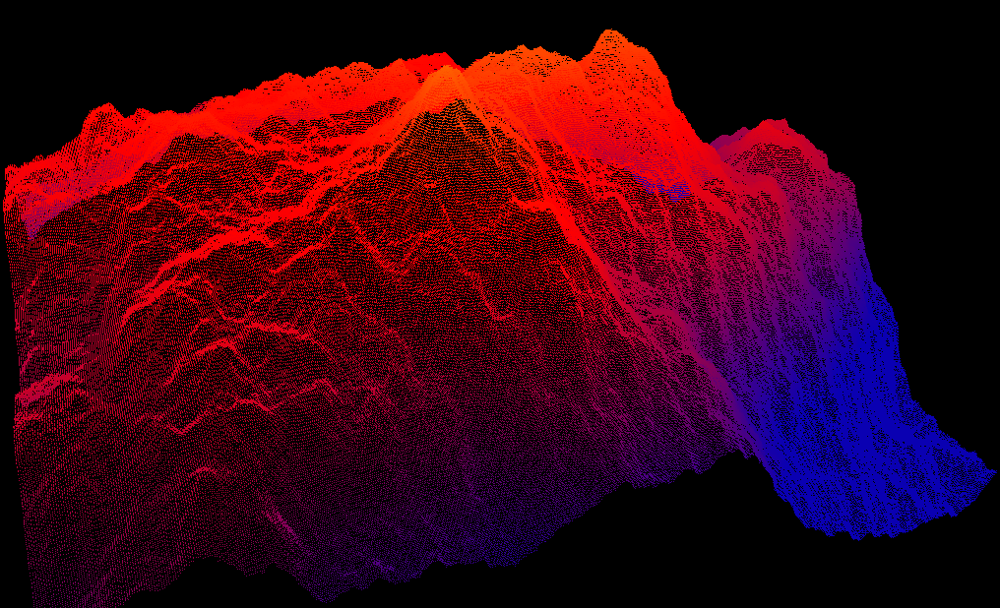

Processing lidar and general point cloud data in GRASS GIS
New lidar processing functionality in GRASS GIS 7.1
Presentation for U.S. Fish and Wildlife Service Remote Sensing Technical Group meeting
Processing lidar and general point cloud data in GRASS GIS
Final project presentation for
UAV/lidar Data Analytics
class
versions:
4×3
,
16×10
,
16×9
Slides are in PDF are were created in LaTeX using the Beamer class. 